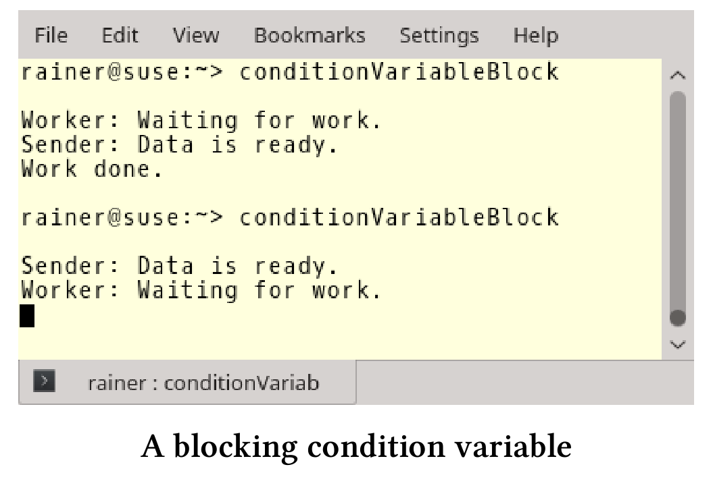

挑战
编写并发程序本身就很复杂，即便是使用C++11和C++14的新特性，也是如此。我希望通过用一整章的内容来讨论并发编程的挑战，读者们会更清楚其中的陷阱与挑战。
ABA问题
ABA表示读取了一个值两次，每次都返回A值。因此，可以得出这样的结论：两次读取之间，相应的变量没有任何变化。然而，在两次读取之间，变量可能有被更新为B的时刻。
用一个简单的场景来比拟这个问题。
一个例子
这个场景里，你坐在车里等待交通灯变绿，绿色代表B，红色代表A。接下来会发生了什么?
- 你看到交通灯，它是红色的(A)。
- 因为很无聊，你打开手机看新闻，而忘记了时间。
- 当你再看一次交通灯时。该死！还是红色(A)。
当然，交通灯在你两次抬头看之间已经变成绿灯过。对于线程(进程)来说，意味着什么?
- 线程1读取值为A的变量
var。 - 线程1被抢占，线程2运行。
- 线程2将变量
var从A更改为B，再更改为A。 - 线程1继续运行并检查变量
var的值并得到A。因为获取到值A，线程1继续运行。
通常这不是一个问题，可以忽略。
非关键的ABA
// fetch_mult.cpp
#include <atomic>
#include <iostream>
template <typename T>
T fetch_mult(std::atomic<T>& shared, T mult) {
T oldValue = shared.load();
while (!shared.compare_exchange_strong(oldValue, oldValue * mult));
return oldValue;
}
int main() {
std::atomic<int> myInt{ 5 };
std::cout << myInt << std::endl;
fetch_mult(myInt, 5);
std::cout << myInt << std::endl;
}
compare_exchange_strong和compare_exchange_weak可以在fetch_mult(第6行)中观察到的ABA问题。fetch_mult将std::atomic<t>& shared和mult相乘。
关键是，读取旧值T oldValue = shared.load()第8行和第9行中的新值比较之间有一个小的时间窗口。因此，另一个线程可以介入，将oldValue从更改为另一个值，然后再返回oldValue。旧值是A，另一个线程修改的值是ABA中的B。
通常，当读操作处理相同的、未更改的变量，则没有什么影响。但是，在无锁并发的数据结构中，ABA可能会产生重大影响。
无锁数据结构
这里不会详细介绍无锁数据结构，仅用单链表实现的无锁堆栈，堆栈只支持两个操作：
- pop：弹出顶部对象，并返回指向它的指针。
- push：将指定的对象推入堆栈。
这里使用伪代码描述pop操作，以便了解ABA问题。pop操作执行以下步骤：
- 获取头节点:head
- 获取后续节点:headNext
- 如果head仍然是堆栈的头节点，则将headNext作为新的头结点。
下面是堆栈的前两个节点:
Stack: TOP -> head -> headNext -> ...
现在，来构造ABA问题的情景。
构造ABA
我们从下面的堆栈开始:
Stack: TOP -> A -> B -> C
线程1处于活动状态，希望弹出堆栈的头节点。
-
Thread 1操作时
head = A
headNext = B
线程1完成pop前，线程2开始工作。
-
Thread 2 pop A
Stack: TOP -> B -> C -
Thread 2 pop B 并且删除B
Stack: TOP -> C -
Thread 2把A推回去
Stack: TOP -> A -> C
线程1重新调度，并检查A == head，因为当前A == head，那么headNext应该是B，但B已经被删除了。因此，程序具有未定义行为。
用什么来拯救ABA问题呢？接下来就介绍，ABA问题的一些补救措施。
补救措施
ABA的概念问题很容易理解，解决方案是消除节点过早的删除。以下是一些补救措施：
标记参考状态
可以使用地址的低位向每个节点添加标记，以表示节点成功修改的频率。尽管检查返回true，但比较-交换(CAS)会失败。这个想法并不能解决问题，因为标记位可能最终会交换。
引用标记状态通常用于事务内存中。
接下来的三种技术是基于延迟回收的思想。
垃圾收集
垃圾收集只保证在不再需要时删除变量。这听起来很有希望解决ABA问题，但有一个明显的缺点。大多数垃圾收集器不是无锁的，即使有一个无锁的数据结构，整个系统也不是无锁的。
风险指针
维基页面： Hazard Pointers
风险指针系统中，每个线程都保存一个风险指针列表，指示线程当前正在访问哪些节点(许多系统中，这个“列表”可能仅限于一两个元素)。风险指针列表中的节点不能被任何其他线程修改或释放。当一个线程想要删除一个节点时，它会将其放在一个节点列表中，进行“稍后释放”，直到没有其他线程的危险列表包含该指针时，才释放该节点的内存。一个专门的垃圾收集线程可以手工进行垃圾收集(如果“稍后释放”的列表由所有线程共享)；或者，清理“被释放”列表可以由每个工作线程，作为“pop”等操作的一部分。
RCU 读取-复制-更新
RCU是Read Copy Update的缩写，是一种用于只读数据结构的同步技术。RCU是由Paul McKenney创建的，自2002年以来一直在Linux内核中使用。
思想很简单，就跟缩写一样，要修改数据，要复制数据。反之，所有的读取都使用原始数据。如果没有读取操作，那么可以安全地将数据进行修改。
要了解更多关于RCU的细节，请阅读Paul McKenney的这篇文章:What is RCU, Fundamentally?
两个新的提案
作为并发工具包的一部分，有两个关于未来C++标准的提案。关于风险指针的提案是P0233R0，关于RCU的提案是P0461R0 。
阻塞问题
为了说明我的观点，需要将条件变量与谓词结合。不这样做的话，程序可能会出现伪唤醒或未唤醒的情况。
如果使用没有谓词的条件变量，则通知线程可能在等待线程等待之前发送通知，等待线程将永远等待，这种现象被称为“未唤醒“。
程序如下。
// conditionVariableBlock.cpp
#include <iostream>
#include <condition_variable>
#include <mutex>
#include <thread>
std::mutex mutex_;
std::condition_variable condVar;
bool dataReady;
void waitingForWork() {
std::cout << "Worker: Waiting for work." << std::endl;
std::unique_lock<std::mutex> lck(mutex_);
condVar.wait(lck);
// do the work
std::cout << "Work done." << std::endl;
}
void setDataReady() {
std::cout << "Sender: Data is ready." << std::endl;
condVar.notify_one();
}
int main() {
std::cout << std::endl;
std::thread t1(setDataReady);
std::thread t2(waitingForWork);
t1.join();
t2.join();
std::cout << std::endl;
}
程序的第一次工作得很好，第二次锁定的原因是notify(第28行)发生在线程t2(第37行)等待之前(第19行)。

当然，死锁和活锁是条件竞争的副产物。死锁通常取决于线程的交错，有时会发生，有时不会。活锁与死锁类似，当死锁阻塞时，活锁“似乎''没有阻塞程序。
破坏程序的不变量
程序不变量，应该在程序的整个生命周期中”保持不变“。
恶性条件竞争破坏程序的不变量。下面程序的不变量是所有余额的总和，例子中是200欧元，因为每个账户起步都是100欧元(第9行)。
// breakingInvariant.cpp
#include <atomic>
#include <functional>
#include <iostream>
#include <thread>
struct Account {
std::atomic<int> balance{ 100 };
};
void transferMoney(int amount, Account& from, Account& to) {
using namespace std::chrono_literals;
if (from.balance >= amount) {
from.balance -= amount;
std::this_thread::sleep_for(1ns);
to.balance += amount;
}
}
void printSum(Account& a1, Account& a2) {
std::cout << (a1.balance + a2.balance) << std::endl;
}
int main() {
std::cout << std::endl;
Account acc1;
Account acc2;
std::cout << "Initial sum: ";
printSum(acc1, acc2);
std::thread thr1(transferMoney, 5, std::ref(acc1), std::ref(acc2));
std::thread thr2(transferMoney, 13, std::ref(acc2), std::ref(acc1));
std::cout << "Intermediate sum: ";
std::thread thr3(printSum, std::ref(acc1), std::ref(acc2));
thr1.join();
thr2.join();
thr3.join();
std::cout << " acc1.balance: " << acc1.balance << std::endl;
std::cout << " acc2.balance: " << acc2.balance << std::endl;
std::cout << "Final sum: ";
printSum(acc1, acc2);
std::cout << std::endl;
}
开始时，账户的总数是200欧元。第33行，通过使用第21 - 23行中的printSum函数来显示金额和。第38行使不变量可见。因为第16行有1ns的短睡眠，所以中间的金额是182欧元。最后，每个账户的余额都是正确的(第44行和第45行)，金额是200欧元(第48行)。
下面是程序的输出。

数据竞争
数据竞争是指至少两个线程同时访问一个共享变量的情况，并且至少有一个线程尝试修改该变量。
程序有数据竞争，则会出现未定义行为，结果是不可预期的。
来看一个数据竞争的程序。
// addMoney.cpp
#include <functional>
#include <iostream>
#include <thread>
#include <vector>
struct Account {
int balance{ 100 };
};
void addMoney(Account& to, int amount) {
to.balance += amount;
}
int main() {
std::cout << std::endl;
Account account;
std::vector<std::thread> vecThreads(100);
for (auto& thr : vecThreads) thr = std::thread(addMoney, std::ref(account), 50);
for (auto& thr : vecThreads) thr.join();
std::cout << "account.balance: " << account.balance << std::endl;
std::cout << std::endl;
}
100个线程addMoney函数将向相同的帐户(第20行)添加50欧元(第25行)。关键的，对账户的写入是不同步的，这里有一个数据竞争，因为是未定义行为，所以结果无效。最后的余额(第30行)会在5000欧元和5100欧元之间。

死锁
死锁是一种状态，因为要等待没有得到的资源的释放，所以至少有一个线程会永久阻塞。
造成死锁的主要原因有两个:
- 互斥锁未解锁。
- 以不同的顺序锁定互斥锁。
为了避免第二个问题，在经典C++中使用了诸如层次锁之类的技术。
有关死锁，以及如何用现代C++克服死锁的详细信息，请参阅互斥量和锁的章节内容。
多次锁定非递归互斥锁
多次锁定非递归互斥锁会导致未定义行为。
// lockTwice.cpp #include <iostream> #include <mutex> int main() { std::mutex mut; std::cout << std::endl; std::cout << "first lock call" << std::endl; mut.lock(); std::cout << "second lock call" << std::endl; mut.lock(); std::cout << "third lock call" << std::endl; }通常会死锁。

伪共享
当处理器从主存中读取一个变量(如int)时，从内存中读取的数据要大于int的大小。处理器会从缓存中读取整个高速缓存行(通常为64字节)。
如果两个线程，同时读取位于同一高速缓存行上的不同变量a和b，则会发生伪共享。虽然a和b在逻辑上是分开的，但在物理地址上是相连的。由于a和b共享同一条高速缓存线行，因此有必要在高速缓存行上进行硬件同步。得到了正确的结果，但是并发的性能下降了。正是这种现象发生在下面的程序中：
// falseSharing.cpp
#include <algorithm>
#include <chrono>
#include <iostream>
#include <random>
#include <thread>
#include <vector>
constexpr long long size{ 100'000'000 };
struct Sum {
long long a{ 0 };
long long b{ 0 };
};
int main() {
std::cout << std::endl;
Sum sum;
std::cout << &sum.a << std::endl;
std::cout << &sum.b << std::endl;
std::cout << std::endl;
std::vector<int> randValues, randValues2;
randValues.reserve(size);
randValues2.reserve(size);
std::mt19937 engine;
std::uniform_int_distribution<> uniformDist(1, 10);
int randValue;
for (long long i = 0; i < size; ++i) {
randValue = uniformDist(engine);
randValues.push_back(randValue);
randValues2.push_back(randValue);
}
auto sta = std::chrono::steady_clock::now();
std::thread t1([&sum, &randValues] {
for (auto val : randValues) sum.a += val;
});
std::thread t2([&sum, &randValues2] {
for (auto val : randValues2)sum.b += val;
});
t1.join(), t2.join();
std::chrono::duration<double> dur = std::chrono::steady_clock::now() - sta;
std::cout << "Time for addition " << dur.count()
<< " seconds" << std::endl;
std::cout << "sum.a: " << sum.a << std::endl;
std::cout << "sum.b: " << sum.b << std::endl;
std::cout << std::endl;
}
第13行和第14行中的变量a和b共享同个缓存行。线程t1(第44行)和线程t2同时使用两个变量，对向量randValues和randValues2中的元素进行求和。两个向量在1到10之间都有1亿个整数。程序的输出显示了一些有趣的事情，a和b在8字节边界上对齐，因为我的操作系统中的long long int是8字节对齐的。

如果将a和b的对齐方式改为64字节会发生什么?64字节是我系统上的高速缓存行的大小。我要对结构做点小改动，这次不用种子来生成随机数，所以每次都得到的随机数相同。
struct Sum{
alignas(64) long long a{0};
alignas(64) long long b{0};
};

现在，a和b在64字节边界处对齐，程序速度提高了6倍多。原因是a和b现在不在同一高速缓存行上。
用优化器检测伪共享
如果我用最大的优化选项编译的程序，优化器会检测到伪共享并消除它。这意味着，我得到了相同的性能数据与真共享，这也适用于Windows。以下是优化后的性能数字。

C++17中的
std:: hardware_destructive_interference_size和与std:: hardware_constructive_interference_size
std::hardware_destructive_interference_size和std::hardware_constructive_interference_size允许以一种可移植的方式处理高速缓存行的大小。std::hardware_destructive_interference_size返回两个对象之间的最小偏移量，以避免伪共享；std::hardware_constructive_interference_size返回相邻内存的最大大小，以满足真共享。在C++17中，Sum可以以一种平台无关的方式编写。
struct Sum{ alignas(std::hardware_destructive_interference_size) long long a{0}; alignas(std::hardware_destructive_interference_size) long long b{0}; };
变量的生命周期问题
写一个具有生命周期相关问题的C++示例非常容易。让创建的线程t在后台运行(也就是说，它通过调用t.detach()来分离)，并且让它只完成一半的工作。这里，创建者线程不会等待子线程完成。在这种情况下，必须非常小心，最好不要在子线程中使用属于创建线程的任何东西。
// lifetimeIssues.cpp
#include <iostream>
#include <string>
#include <thread>
int main() {
std::cout << "Begin: " << std::endl;
std::string mess{ "Child thread" };
std::thread t([&mess] {std::cout << mess << std::endl; });
t.detach();
std::cout << "End:" << std::endl;
}
这程序太简单了。线程t使用std::cout和变量mess，它们都属于主线程。结果是，在第二次运行时，我看不到子线程的输出。只有“Begin:”(第9行)和“End:”(第16行)打印了出来。

移动线程
移动线程会使线程的生命周期问题变得更加复杂。
线程支持移动语义，但不支持复制语义。原因是std::thread的复制构造函数被设置为delete：thread (const thread&) = delete;。试想，如果线程在持有锁的情况下能进行复制，会发生什么。
让我们移动一个线程。
错误地移动线程
// threadMoved.cpp
#include <iostream>
#include <thread>
#include <utility>
int main(){
std::thread t([]{std::cout << std::this_thread::get_id();});
std::thread t2([]{std::cout << std::this_thread::get_id();});
t = std::move(t2);
t.join();
t2.join();
}
线程t和t2应该完成它们的工作：打印它们的id。除此之外，线程t2的所有权移动到t(第12行)。最后，主线程处理它的子线程并汇入它们。等一下，结果与我的预期大不相同:

出了什么问题?这里有两个问题:
- 通过移动线程
t2,t获得一个新的可调用单元，并调用它的析构函数。结果，t的析构函数调用std::terminate，原始的t线程仍然是可汇入的。 - 线程
t2没有相关的可调用单元，在没有可调用单元的线程上调用join会导致异常std::system_error。
了解了这一点，修复工作就很简单了。
// threadMovedFixed.cpp
#include <iostream>
#include <thread>
#include <utility>
int main(){
std::thread t([]{std::cout << std::this_thread::get_id();});
std::thread t2([]{std::cout << std::this_thread::get_id();});
t.join();
t = std::move(t2);
t2.join();
std::cout << "\n";
std::cout << std::boolalpha << "t2.joinable(): " << t2.joinable() << std::endl;
}
结果是线程t2不可汇入。
竞态条件
竞态条件是一种情况，其中操作的结果取决于某些操作的交错。
竞态条件很难发现。由于其取决于线程是否交错出现，也就是内核的数量、系统的利用率或可执行文件的优化级别，都可能是导致出现竞态条件的原因。
竞态条件本身并没什么。但线程以不同的方式交织在一起后，常常会导致严重的问题。这种情况下，称其为恶性竞争条件。恶意竞争条件的典型症状表现：数据竞争、破坏程序不变量、阻塞线程，或变量有生存周期问题等。